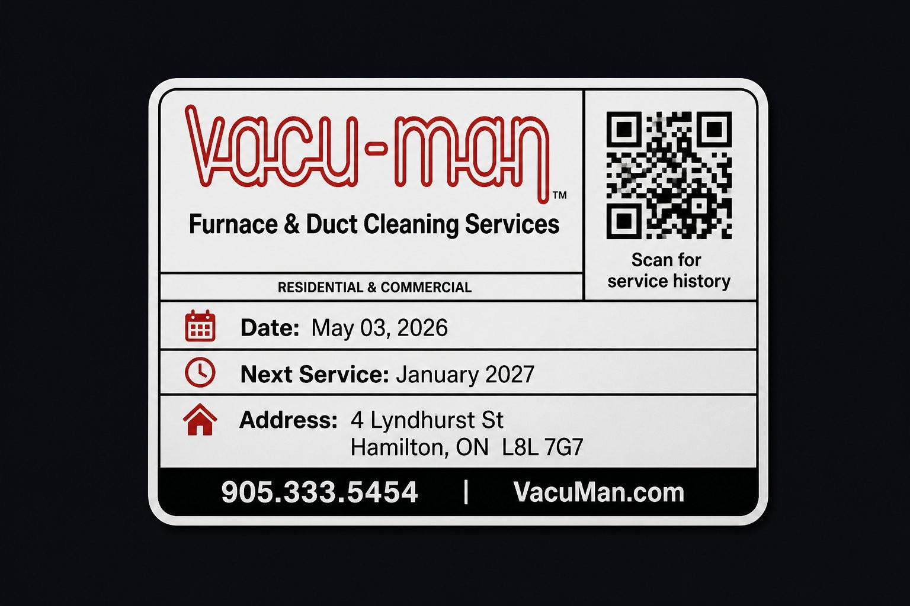
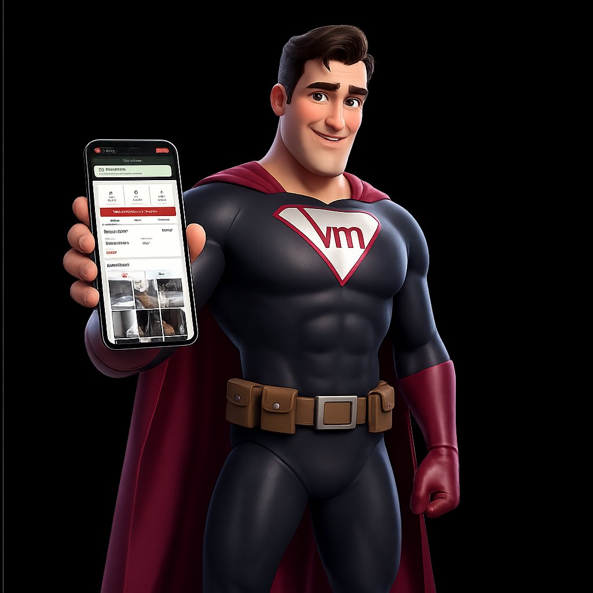
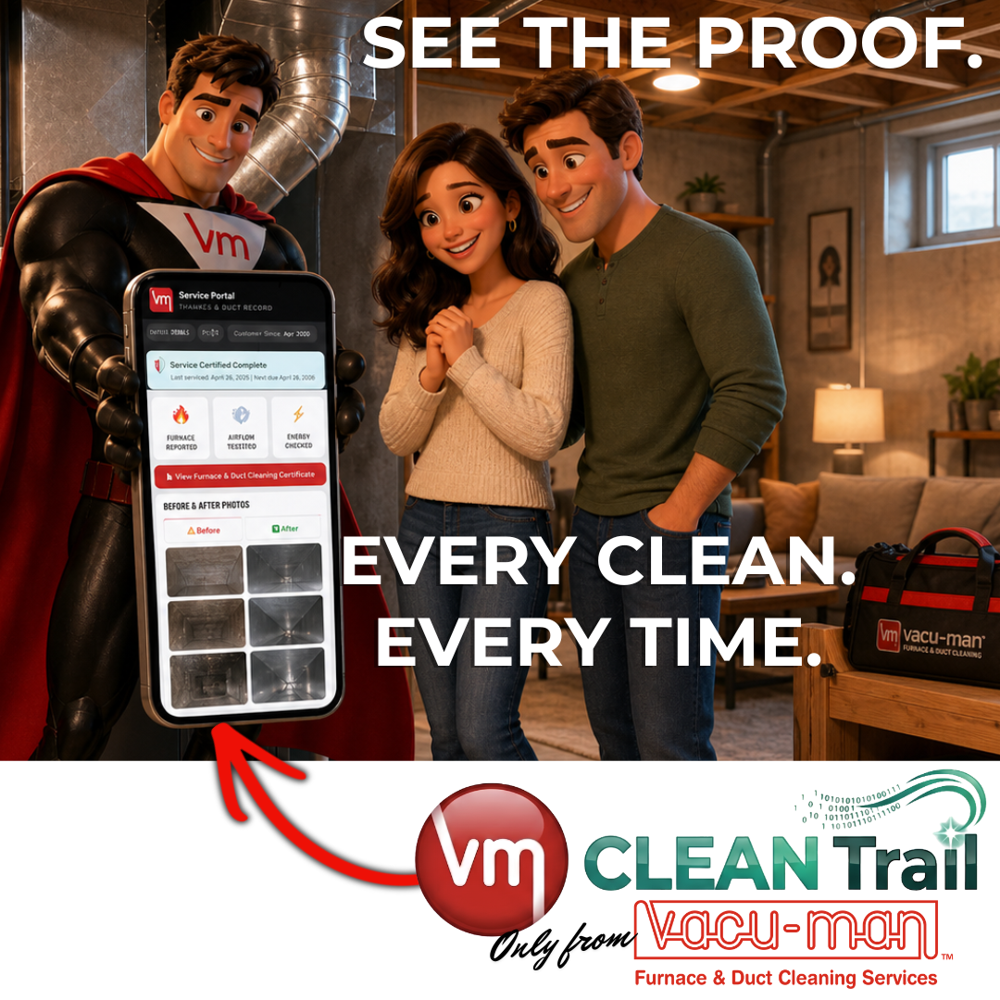
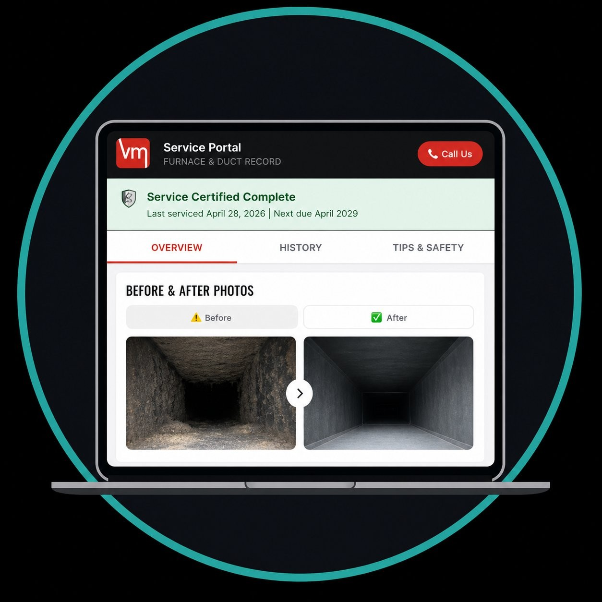
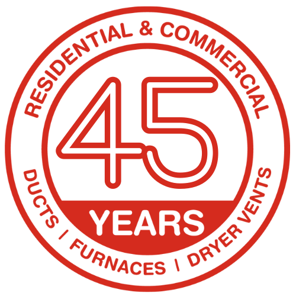

01

The Sticker
After every Vacu-Man service, a QR-coded sticker is placed on your furnace. It is yours for the life of the unit. Quietly waiting.
VM CleanTrail™ is the verified record of your duct cleaning. Before and after photos, full service history, and a dryer vent certificate of completion. On-demand. Only from Vacu-Man.


Every Vacu-Man duct cleaning is documented from start to finish. The supply trunk, the return trunk, individual ductwork, and the blower fan are photographed before and after the work. Then the entire record is delivered to your property-specific CleanTrail™ service record the same day.
CleanTrail™ is designed to be a simple verified record of your service. No app store. No password reset emails. No subscription page.

After every Vacu-Man service, a QR-coded sticker is placed on your furnace. It is yours for the life of the unit. Quietly waiting.
Open your phone camera. Scan the code. Your CleanTrail™ service record loads in your browser. No download, no login, no friction.

Before and after photos, complete service history, and your dryer vent certificate. All on-demand. All from your last visit by Vacu-Man.

Vacu-Man was founded by Stephen Oldfield on August 27, 1980. 45 years later, the same family runs the business, the same values lead the work, and the same standard applies to every clean. CleanTrail™ simply puts that standard on your phone.
"Do It Right or Don't Do It At All."
CleanTrail™ is the visible proof. Underneath it, every job is built on a 45-year-old standard for residential and commercial duct cleaning, furnace cleaning, and dryer vent cleaning.
Full residential and commercial duct cleaning across supply, return, and trunk lines. Photographed and documented every time.
View Duct CleaningThe blower fan, heat exchanger area, and motor compartment are cleaned and documented. Pairs with every duct service.
View Furnace CleaningLint hazard removed and a downloadable certificate of completion delivered to your CleanTrail™ page on the same day.
View Dryer Vent CleaningResidential and commercial duct cleaning, furnace cleaning, and dryer vent cleaning across five communities.
The questions our customers, property managers, and insurers ask most often.
45 years of expertise, on call for your home or building.
Call (905) 333-5454